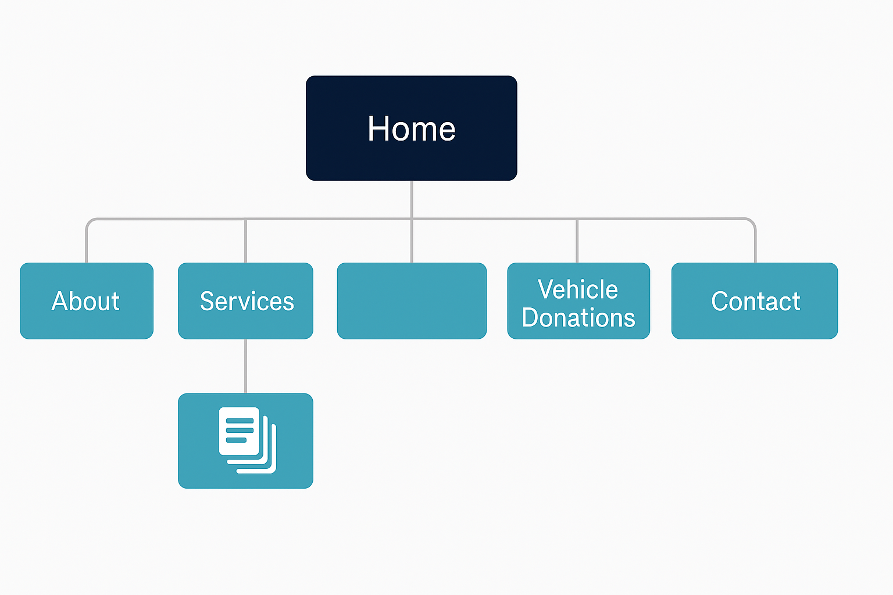

Design Process Documentation
A complete breakdown of the research and design process used to redesign the NAWS website.
1. Website Audit
As part of my final project, I reviewed the current website for the Northland Animal Welfare Society (NAWS) to figure out what’s working well and what needs improvement. The purpose of this audit was to help guide my redesign to be more responsive, easier to use, and better organized for visitors.
What the Website Does Well
The website has a lot of great information. It clearly explains NAWS’s services like low-cost spay and neuter, microchipping, grooming, and pet food assistance. The contact info is easy to find, and the colors feel friendly and welcoming. The site also includes photos and important forms, which is helpful for users.
What the Website Struggles With
While the site has good content, the design is outdated and not very user-friendly. The layout feels a bit messy, and it can be hard to quickly find what you’re looking for. Some of the pages are text-heavy, and there isn’t a lot of consistency between them. Also, it’s not very mobile-friendly—the content doesn’t resize well, and navigation becomes difficult on smaller screens.
Navigation and Structure
The site’s main navigation works okay on desktop, but it doesn’t adapt well to phones or tablets. There’s no dropdown or hamburger menu, and the links can feel cramped on small screens. The organization of pages could also be improved to group similar content together more clearly.
Branding and Design
The branding is somewhat consistent, but it could be improved. The logo and colors stay mostly the same across the site, but fonts and layouts often change between pages. This makes the site feel less professional and harder to read. A consistent design system would help tie everything together better.
Responsiveness
The biggest issue is that the site isn’t fully responsive. On mobile devices, images and text don’t scale properly, and elements can get cut off or become too small. Adding breakpoints and using a mobile-first approach would make the site much easier to use on all devices.
Site Map
Below is a visual representation of the original site's structure. This map shows how the main pages are organized and grouped, especially under sections like Services and Ways to Help.

Interface Inventory
This is a list of all the main design and interface pieces used on the original NAWS website. It helped me understand what’s already on the site so I could plan my redesign better.
1. Navigation and Layout
- Top Navigation Bar – Links to main pages like Home, About, Services, Ways to Help, and Contact.
- Footer Navigation – Repeats the top links and adds address and contact info.
- Responsive Layout – Tries to adjust for phones and desktops (not perfect).
2. Text and Headings
- Headings – Used for titles and sections.
- Paragraph Text – Normal text for descriptions.
- Lists – Bullet points for info like services or contact details.
3. Forms and Input Fields
- Contact Form – Has name, email, and message inputs.
- Appointment Forms – Lets people schedule services online.
- Downloadable Forms – Printable PDFs for specific services.
4. Buttons and Links
- Main Buttons – Like “Donate Now,” designed to stand out.
- Hover Effects – Buttons change a little when hovered over.
5. Images and Media
- Logo – NAWS paw icon in the header.
- Animal Photos – Pictures of pets, volunteers, and events.
- Icons – Small graphics with links or info blocks.
6. Interactive Elements
- Dropdown Menus – Under menus like Ways to Help.
- Google Map – Shows NAWS’s location.
- Clickable Links – For email, phone, or social media.
7. Messages and Feedback
- Confirmation Messages – After sending a form.
- Error Messages – When something goes wrong in a form.
8. Other Features
- Social Media Icons – Links to platforms like Facebook.
- Search Bar – (If working) lets users search content.
- Newsletter Signup – Sign up form (if used).